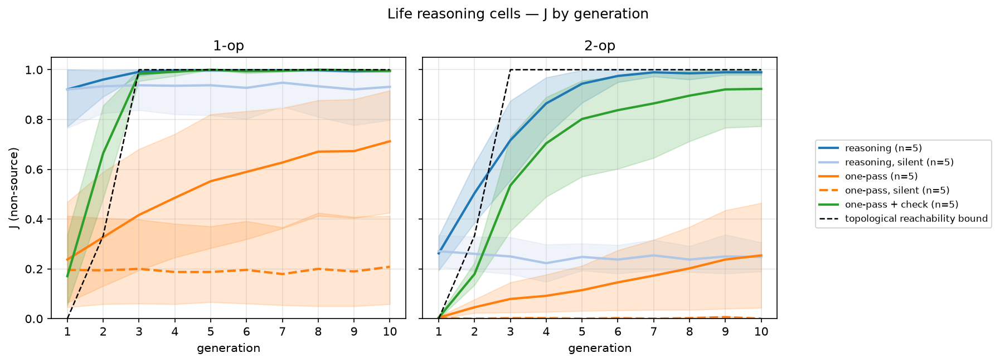

Research note · OpenAI gpt-6-luna
Same Weights, Three Ways to Answer
Why Collective Reasoning Needs More Than Communication
Asked to pick one option in a single pass, a frontier model cannot check a two-step rule (59% on pairs, near chance) and follows a false rule it is told 76% of the time. Let the same model think for a few hundred tokens and it checks almost perfectly (100%) and follows the false rule only 1% of the time. Without thinking, switching APIs changes nothing. On a grid of 100 copies, each with too little evidence to find the rule alone, the right two-step rule spreads only when agents can check what their neighbours tell them, by reasoning or with an external check. An update at the end shows that this works even when no agent is given the answer.
The setup
The task is to check a rule against evidence. A hidden transformation maps 4-symbol strings over A–H to other strings, and the model sees a few input → output examples. The catalog has 101 candidate rules: 17 single operations (reverse, rotate_left(k), shift_symbols(k), swap(i,j)) and 84 compositions of two, such as shift_symbols(1);swap(1,2).
Three tests, all on held-out rules:
- Pairs. One true and one false candidate rule, named; does the model prefer the true one? 200 pairs, 100 single-op and 100 two-op, plus 100 three-op pairs from a separate held-out set of compositions outside the catalog. Chance is 50%.
- Told a lie. A message names a false rule as the answer; does the model follow it, or recover the true rule from its examples? 84 two-op cases.
- Pragmatic listening. A reference game where the right answer depends on what the speaker would have said instead (46 instances, 153 words). Scored against an ideal pragmatic listener.
One model, gpt-6-luna (OpenAI, public beta), asked three ways:
- Decisions API: one choice question, the model returns a probability for every option in one pass. Averaged over 4 option orderings.
- Responses API, reasoning off (
effort=none): the model writes the option key directly. - Responses API, reasoning on (
effort=mediumandhigh): the model may think before writing the key.
Responses modes were sampled 8 times per question across the 4 orderings; all modes are compared on the chosen answer, not on probabilities. Predictions and pass thresholds were committed before any Responses number existed (tag prereg-luna-modes-lock; see PROVENANCE.md). The two that matter most: on two-op pairs, reasoning high beats Decisions by at least +0.15 (primary); with reasoning off, the two APIs differ by less than 0.10 (control).
Results
Two-op pair preference
chance = 0.50
Pragmatic listening
Accuracy vs composition depth
Reasoning tokens (medium): ~227 → 689 → 1,349
Bars are choice accuracy. Decisions = one-pass API; none / medium / high = Responses reasoning effort.
Paired cluster-bootstrap intervals against Decisions: reasoning high +0.41 [+0.32, +0.50] on two-op pairs, reasoning off +0.01 [−0.06, +0.08], and +0.35 [+0.27, +0.44] on pragmatic listening. On three-op pairs the gap widens: reasoning medium +0.475 [+0.35, +0.59] over Decisions, which falls to 52%. Medium and high sit within two points of each other wherever both ran, so depth, not effort level, is what the budget has to cover: mean reasoning tokens grow from 227 (one op) to 689 (two) to 1,349 (three).
What it means
The model has the components the task needs; in one pass, it fails to compose them. Checking a two-op rule means applying the first operation, holding the intermediate string, applying the second and comparing. In a single pass that intermediate result has to be computed inside the network, with nowhere to write it down, and here the model does not manage it. A few hundred tokens of reasoning give it a place to write. This is a limit of the mode as observed, not a proof that one pass cannot compose: whether training can teach a one-pass model to do this step internally, in a way that transfers to compositions and environments it was not trained on, is an open question and the one I want to test next.
Three observations point the same way:
- It is a cliff, not a slope. One pass scores 94% on single operations, 59% on two and 52% on three: it does not degrade with depth, it drops to chance at the first composition. Reasoning stays at the ceiling at all three depths while its token count roughly doubles per added step.
- The control holds. Reasoning off, Responses − Decisions on two-op pairs is +0.01 [−0.06, +0.08]. The gain comes from thinking, not from a different API.
- An external step works as well as an internal one. When the environment attaches a ready-made ✓/✗ check to each candidate rule, the same one-pass model goes from 65% to 99.5% on picking the rule from the full catalog. On pragmatic listening, an explicit step built from the same one-pass model also works: asking it, for each candidate item, what word it would have said, and picking the item that best explains the word heard, lifts it from 61% to 93% [+0.23, +0.40] with no reasoning at all, matching reasoning medium (93%;
pragmatic_argmax_L2= 0.935 inluna_modes.json). Inverting a neural speaker to get a pragmatic listener is an established method (Andreas & Klein, 2016; Fried et al., 2018); what is new here is that it matches reasoning on the same weights. Since the reference listener is itself defined by inverting a speaker, this shows the model’s speaker carries what its one-pass listener ignores, not that the model becomes pragmatic in general. Someone has to do the intermediate step; it does not matter much who.
This is the familiar compositionality gap of language models: each step known, the composition not done without an explicit chain. The new part is seeing it inside one set of weights, with the reasoning budget as the only thing changed, and a dose curve that saturates early: medium (mean ~690 reasoning tokens on two-op pairs, ~460 across all pairs) is already at the ceiling.
Caveats
- One model, one task family. String transformations over a 101-rule catalog. Other domains may need more or fewer steps. The three-op rules come from a separate held-out set outside the catalog, with two extra options per question, so the 1 → 2 → 3 comparison is not a pure change of depth.
- Public beta.
gpt-6-lunaand the Decisions API may change before release. How Decisions mode is built internally is not documented, so I make no claim about it beyond what it outputs. - Different estimators. Decisions returns probabilities; Responses modes are estimated from 8 samples, with ties scored as half. That is why every comparison is on the chosen answer.
- Small held-out sets. Intervals are cluster bootstraps over the 26 held-out two-op functions (pairs) or the 46 instances (pragmatic listening).
- Validity. 0 invalid answers with reasoning off or medium; 1 truncated answer out of 1,600 at high, where reasoning hit the 8,192-token cap.
Why this matters for multi-agent work
I study whether a population of decision-model agents on a 10×10 grid can spread a correct rule by messaging each other. An agent that follows whatever its neighbours say spreads errors as easily as truths; spreading the truth needs agents that check claims against their own evidence.
These results say one-pass decision models, small or frontier, do not check two-step claims, while the same weights with a little reasoning do. That splits the next steps into two routes:
- Verify from outside: the environment attaches checks to messages (our engine-check stand).
- Verify from inside: agents that reason, or decision models trained to make the intermediate step within one pass.
I put both on the same grid, with each agent given too little evidence to find the rule alone.
On the grid
Single rules are solved by each reasoning agent alone. Two-step rules are solved only collectively, and only when incoming claims are checked: by the agent’s own reasoning or by the environment.
The same gpt-6-luna, now as 100 cells on a 10×10 torus. Four source cells hold the true rule. (For reasoning cells they turn out not to matter; see the update.) Every other cell sees one example that fits more than one rule, so it cannot identify the rule alone. Each generation a cell picks a rule, is told whether it was right and, with the channel on, publishes its rule to its neighbours. J is the share of non-source cells holding the true rule, averaged over 10 generations; 5 seeds per depth. “Solved” below means most non-source cells come to hold the true rule and keep holding it, not that some cells find it.
| cells | channel | check on incoming rules | J, one-op | J, two-op |
|---|---|---|---|---|
| reasoning medium | on | own reasoning | 0.99 | 0.82 |
| reasoning medium | off | — | 0.93 | 0.25 |
| Decisions (argmax) | on | none | 0.53 | 0.14 |
| Decisions (argmax) | off | — | 0.19 | 0.00 |
| Decisions (argmax) | on | engine ✓/✗ | 0.88 | 0.67 |

Share of non-source cells holding the true rule, by generation; bands are 95% bootstrap intervals over 5 seeds. “Silent” = no channel; “one-pass” = Decisions API; “+ check” = engine ✓/✗ on incoming rules. The dashed black line is the topological reachability bound: how fast the rule could spread on this grid if every cell adopted it on first contact.
- Messages make two-op rules possible, not just faster. With the channel, reasoning cells lock on the true rule in all 5 two-op seeds by generation 2–4; without it they stay at 0.25 (+0.57 [+0.55, +0.61]). On one-op rules each reasoning cell finds the rule alone, so the channel adds little.
- Collective correction has two stages. A reasoning cell checks each incoming rule against its own example and does not adopt one that contradicts it (98% of the time, in the three seeds traced). Among the rules that fit, it switches to the true one when told its own answer was wrong and the true rule is in its inbox (87%). One-pass cells keep the second stage and lack the first: in the three seeds I traced, all 70 cells that switched to a neighbour’s rule had just been told they were wrong, but they took rules contradicting their own example as readily as rules that fit it. That stage alone still lets some truth through: without the channel one-pass cells never reach a two-op rule (J 0.00); with it they reach 0.14 (+0.13 [+0.03, +0.25]). I had predicted no difference. On one-op rules, which one-pass cells can check, the channel matters more: 0.53 against 0.19 (+0.34 [+0.20, +0.47]).
- Identical agents agree without talking, sometimes on the wrong answer. In one two-op task, the first operation of the true rule alone fits 97% of the cells’ examples. Without a channel, 78% of reasoning cells picked that simpler rule independently in the first generation (31% would pick a single-op rule if cells chose evenly among the rules that fit their example) and held it for all ten, although they were told their answer was wrong in 90% of generations: with nothing better in sight, “wrong” alone did not move them. Knowing an answer is wrong is not the same as having a better one, even for a reasoning model. One-pass cells did the same (98%). With messages, reasoning cells left it within a generation. A shared prior makes copies of one model agree; agreement alone is no evidence that they communicated. This is one task out of five, so it is an observation, not a rate.
- Delegated verification works for one-pass agents. With an engine ✓/✗ attached to each incoming rule, one-pass cells reach 0.67 on two-op rules (0.92 by generation 10), against 0.14 without (+0.53 [+0.31, +0.70]). It helps on one-op rules too, 0.88 against 0.53 (+0.35 [+0.16, +0.56]): picking from 101 rules with one example is harder than choosing between two. On two-op rules it is slower than reasoning cells, and not yet level with them: by generation 10, 0.92 against 0.99.
- An engine check cannot break that kind of agreement. The check tests whether a rule fits the examples, and the simpler false rule does: it solves local consistency, not identifiability. In that task, one-pass cells with engine checks locked on the false rule for 7 of 10 generations before recovering. Only the combination of “you were wrong” and the true rule arriving from a neighbour breaks it.
Caveats specific to the grid: one model, 5 seeds per depth, one 10-generation epoch, and a lock threshold (modal share ≥ 0.5) chosen in advance; at 0.6 the false-agreement result above survives and two borderline cases disappear.
The pattern is the one from the single-agent tests, scaled up: in these experiments, collective inference worked only when incoming claims were checked, by the agents or by the environment, and a channel without a check passed errors along with truths. Whether a one-pass model can be trained to make that check itself is the next question.
Update, Oct 11, 2026: does the grid need a teacher?
The grid runs above seed four “source” cells with the true rule. I reran the two-op tasks with one source and with none: same model, same five tasks, same private examples, with predictions committed before the runs.
| reasoning cells, two-op | J at generation 10 | J averaged over 10 generations |
|---|---|---|
| 4 sources (as above) | 0.99 | 0.82 |
| 1 source | 0.98 | 0.80 |
| 0 sources | 0.99 | 0.82 |
| 0 sources, no messages | 0.25 | 0.25 |
No teacher needed. With no seeded source, all five populations converge on the true rule (98–100% of cells by generation 10). In the first generation, 23–39% of cells find the two-step rule on their own, as they do without messages. The rest are told they are wrong and check the candidates their neighbours send. Even with one source, 70–88% of the cells holding the rule at the end trace it only to such solo finds, not to the source.
A minority overturns a majority. In the task where the simpler first operation fits almost every example, 75% of cells start on the false rule and 23% on the true one. Without messages, the false majority holds for all ten generations. With messages and no source, the true rule is the majority by generation 3 and is held by 98% of cells at generation 10. I had predicted the opposite: that without a seeded source the population would stay locked on the false rule.
Checks narrow the field; votes break ties. A cell that has been told it is wrong, and has only one incoming rule that survives its own check, usually switches on a single neighbour’s message (77% per generation; 87% with three or more neighbours sending it). When two rules survive the check, the number of neighbours decides (25% with one, 75% with three or more). One-pass Decisions cells follow the crowd either way (4% with one, 27% with three or more): they have no check to narrow the field.
One-pass decision cells behave differently. They almost never find the rule alone, so they depend on the source. With an external check on incoming claims, a single source’s rule travels the whole grid (92% of cells at generation 10, 80% tracing it back to the source). Without the check, the wave dies within a few steps (10%).
What this changes. The conclusion above stands: collective inference needed a check on incoming claims. But “a seeded truth spreading through the grid” is the wrong picture for reasoning cells. In these runs the true rule was present from the first generation, so what the grid did was select among hypotheses some agents already held. In follow-up runs where each agent’s evidence was more ambiguous, the true rule sometimes won although no agent held it at the start; I am testing what drives that.
Caveats: one model, five tasks, one 10×10 grid on which no cell is more than five steps from any other. The share of solo finds depends on how much evidence each cell gets; with less evidence the minority may be too small to tip the population. Two of my predictions for these runs failed: I expected most switches on the wavefront to involve a single neighbour (19% did, because solo finds are everywhere), and I expected the zero-source population to stay on the false rule in the hard task (it did not).
Edited Oct 12: one sentence narrowed after follow-up runs.